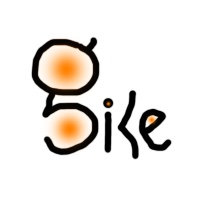

<HTML>
<HEAD>
<TITLE>
UMW CPSC 405
</TITLE>
<META HTTP-EQUIV="pragma" CONTENT="no-cache">
<meta http-equiv="X-UA-Compatible" content="IE=edge">
<meta name="viewport" content="width=device-width, initial-scale=1">

<link href="css/bootstrap.min.css" rel="stylesheet" media="screen">
<link rel="stylesheet" type="text/css" href="css/style.css">
<link rel="stylesheet" href="labs/labs.css" type="text/css" />

</HEAD>

<BODY BGCOLOR=#ffffff TEXT=#000000>

<!-- Fixed navbar - navigation bar at top of window -->
<div class="navbar navbar-default navbar-fixed-top" role="navigation">
   <div class="container-fluid">
      <div class="navbar-header">
         <button type="button" class="navbar-toggle" data-toggle="collapse" data-target=".navbar-collapse">
            <span class="sr-only">Toggle navigation</span>
            <span class="icon-bar"></span>
            <span class="icon-bar"></span>
            <span class="icon-bar"></span>
         </button>
         <a class="navbar-brand" href="xv6index.html">UMW CPSC 405 - OS</a>
      </div>

      <div class="navbar-collapse collapse">
         <ul class="nav navbar-nav">
            <li><a href="schedule.html">Schedule</a></li>
          
            <li class="dropdown">
               <a href="#" class="dropdown-toggle" data-toggle="dropdown">Class<span class="caret"></span></a>
         		   <ul class="dropdown-menu" role="menu">
                  <li><a href="overview.html">Overview</a></li>
                  <li><a href="general.html">Web Syllabus</a></li>
    	      	    <li><a href="xv6index.html">CPSC 405</a></li>
               </ul>
            </li>
         
            <li class="dropdown">
               <a href="#" class="dropdown-toggle" data-toggle="dropdown">Labs<span class="caret"></span></a>
               <ul class="dropdown-menu" role="menu">
     	            <li><a href="tools.html">Tools</a></li>
     	            <li><a href="labsubmissions.html">Lab Submissions</a></li>
     	            <li><a href="labs/guidance.html">Guidance</a></li>
       	          <li><a href="labs/gdb.html">GDB</a></li>
                  <li><a href="labs/firstlab.html">Lab Firstlab</a></li>
                  <li><a href="labs/util.html">Lab Utilities</a></li>
     	            <li><a href="labs/syscall.html">Lab System calls</a></li>
                  <li><a href="labs/pgtbl.html">Lab Page tables</a></li>
                  <li><a href="labs/traps.html">Lab Traps</a></li>
                  <li><a href="labs/scheduling.html">Lab Scheduling</a></li>
                  <li><a href="labs/fs.html">Lab File system</a></li>
                  <li><a href="labs/thread.html">Lab Multithreading</a></li>
                  <li><a href="labs/shell.html">Lab Shell</a></li>
                  <!-- Extra MIT labs - in Xv6/LabNotes 
                  <li><a href="labs/cow.html">Lab Copy on-write</a></li>
                  <li><a href="labs/net.html">Lab network driver</a></li>
                  <li><a href="labs/lock.html">Lab Lock</a></li>
                  <li><a href="labs/mmap.html">Lab mmap</a></li>
                  -->   
               </ul>
            </li>
         
            <li class="dropdown">
               <a href="#" class="dropdown-toggle" data-toggle="dropdown">xv6<span class="caret"></span></a>
     	         <ul class="dropdown-menu" role="menu">
     	            <li><a href="xv6.html">xv6</a></li>
     	            <li><a href="xv6/book-riscv-rev3.pdf">xv6 book</a></li>
               </ul>
            </li>
         
            <li><a href="reference.html">References</a></li>  
            <li><a href="https://discord.com/login">Discord</a></li>
            <li><a href="thanksmit.html">ThanksMIT</a></li>
         </ul>

         <ul class="nav navbar-nav navbar-right">
            <p class="navbar-text">2026</p>
         </ul>

         <a href="https://gusty.bike/index.html" class="pull-right"></a> 

      </div>
   </div>
</div>

<div class="container">

<style type='text/css'>
.l {
	margin-left: 4em;
}
</style>

<script type='text/javascript'>
function unfoldinstrux(unfold) {
  var e = document.getElementById("installinstrux");
  e.className = unfold ? "foldo" : "foldc";
}
</script>

<H1>
CPSC 405 Tools
</H1>
<p>
<b><a href="#sampleriscv">Sample RISV-V</a></b>, 
<b><a href="#establishlinux">Establish Linux</a></b>, 
<b><a href="#establishxv6">Establish Xv6</a></b>, 
<b><a href="#testxv6">Test Xv6</a></b> 


<p>In CPSC 405, we develop software using the C programming language.
Our software is either (1) Xv6Linux/Unix utility or system programs (like <tt>cat</tt> and <tt>ls</tt>) or (2) operating system code that is part of
Xv6. 
To develop our programs, you must have a Linux/Unix operating system, two C compiler toolchains, the Gnu Debugger (gdb), <tt>make</tt>,
and other standard Linux utilities. 
A C compiler toolchain includes programs
such as a C preprocessor, C compiler, assembler, linker, and C object dump.
Most of our programs are developed for the Xv6 operating system.
Xv6 is a special environment that includes the source code for simple Unix/Linux like OS
and its utility programs (i.e., <tt>ls</tt>, <tt>cat</tt>, <tt>grep</tt>, etc.).
Xv6 runs on a RISC-V architecture, which for our class is in the <tt>qemu</tt> emulator,
which runs on a Linux computer. To summarize, you need
<ul>
<li>A Linux host computer. The host computer hosts your source code and software development.
<li>A Linux host computer C compiler toolchain, which runs on the host computer and compiles C such that the executable runs on the host.
<li>A QEMU emulator that runs on the Linux host computer and emulates a RISC-V architecture.
<li>A Linux-based RISC-V cross compiler toolchain, which runs on the host computer and compiles/links C code such that the executable runs a RISC-V computer.
<li>The resulting executable from the RISC-V cross compiler runs on the RISC-V QEMU emulator.
</ul>

<p><b>The simplest way to establish your programming environments is to use our CPSC server.</b> It is a Linux computer that has 
all of the tools required for out class. You do not have to do anything to install Linux, QEMU, and the RISC-V compiler toolchain.
All you have to do is login, perform git clones, design, edit, build, and test your programs.

<p>For those more adventuresome, you can establish the programming environments on your personal computers.
The instructions on this webpage describe how to establish the programming environments on your personal computers.
You must perform two main steps.
<ol>
<li>Establish Linux on your personal computer.
<li>Establish the Xv6 Programming Environment on your personal computer running under the Linux established in Step 1. 
The Xv6 programming environment includes QEMU, the RISC-V compiler toolchain, and make.
</ol>

<p><b>To reiterate, it is easiest to use the CPSC Linux Server</b> - it has everything needed for our class. 

<p>If you are having trouble getting things set up, please come by to office hours, or post questions to Discord. We (me and students in our class) are happy to help!</p>
<p><a name="sampleriscv"></a>
<h2>Sample RISC-V Cross Compiler Commands</h2>
The following shows running the RISC-V <tt>gcc</tt> cross compiler. 
<ul>
<li>The code generated does <b>not</b> run on your host Linux.
<li>The code generated runs on the QEMU RISC-V emulator.
<li>The <tt>a.out</tt> file shown by the <tt>ls</tt> command below only runs on a RISC-V computer.
</ul>
</ul>
<pre>
$ riscv64-linux-gnu-gcc test.c
test.c:1:27: error: conflicting types for 'argv'; have 'char **'
    1 | int main(int argv, char **argv) {
      |                    ~~~~~~~^~~~
test.c:1:14: note: previous definition of 'argv' with type 'int'
    1 | int main(int argv, char **argv) {
      |          ~~~~^~~~
$ vim test.c  <-- edit to fix duplicate argv
$ riscv64-linux-gnu-gcc test.c
$ ls
a.out  test.c
</pre>
<p> The following shows running the RISC-V <tt>gcc</tt> cross compiler to generate assembly code.
<ul>
<li>Notice the <tt>-S</tt> flag, which instructs <tt>gcc</tt> to generate assembly code.
<li>The resulting assembly code is in the file <tt>test.s</tt>.
<li>The <tt>cat test.c</tt> command displays the C code.
<li>The <tt>cat test.s</tt> command displays the resulting assembly code.
</ul>
<pre>
$ riscv64-linux-gnu-gcc -S test.c
$ ls
test.c  test.s
$ cat test.c
int main(int argc, char **argv) {
   int i = 0, j = 0;
   while (i < 10)
      j++;
   return 0;
}
$ cat test.s
	.file	"test.c"
	.option pic
	.text
	.align	1
	.globl	main
	.type	main, @function
main:
	addi	sp,sp,-48
	sd	s0,40(sp)
	addi	s0,sp,48
	mv	a5,a0
	sd	a1,-48(s0)
	sw	a5,-36(s0)
	sw	zero,-20(s0)
	sw	zero,-24(s0)
	j	.L2
.L3:
	lw	a5,-24(s0)
	addiw	a5,a5,1
	sw	a5,-24(s0)
.L2:
	lw	a5,-20(s0)
	sext.w	a4,a5
	li	a5,9
	ble	a4,a5,.L3
	li	a5,0
	mv	a0,a5
	ld	s0,40(sp)
	addi	sp,sp,48
	jr	ra
	.size	main, .-main
	.ident	"GCC: (Ubuntu 11.4.0-1ubuntu1~22.04) 11.4.0"
	.section	.note.GNU-stack,"",@progbits
</pre>
<p> The following shows running the RISC-V <tt>object dump</tt> program.
<ul>
<li>Notice how the object file has RISC-V assembly code and debug information
that allows showing the corresponding C source code.
</ul>
<pre>
$ riscv64-linux-gnu-objdump -S wc.o

wc.o:     file format elf64-littleriscv


Disassembly of section .text:

0000000000000000 <wc>:

char buf[512];

void
wc(int fd, char *name)
{
   0:	7119                	addi	sp,sp,-128
0000000000000002 <.LCFI0>:
   2:	fc86                	sd	ra,120(sp)
   4:	f8a2                	sd	s0,112(sp)
   6:	f4a6                	sd	s1,104(sp)
   8:	f0ca                	sd	s2,96(sp)
   a:	ecce                	sd	s3,88(sp)
   c:	e8d2                	sd	s4,80(sp)
   e:	e4d6                	sd	s5,72(sp)
  10:	e0da                	sd	s6,64(sp)
  12:	fc5e                	sd	s7,56(sp)
  14:	f862                	sd	s8,48(sp)
  16:	f466                	sd	s9,40(sp)
  18:	f06a                	sd	s10,32(sp)
  1a:	ec6e                	sd	s11,24(sp)
  1c:	0100                	addi	s0,sp,128

000000000000001e <.LCFI1>:
  1e:	f8a43423          	sd	a0,-120(s0)
  22:	f8b43023          	sd	a1,-128(s0)

0000000000000026 <.LVL1>:
  int i, n;
  int l, w, c, inword;

  l = w = c = 0;
  inword = 0;
  26:	4981                	li	s3,0
  l = w = c = 0;
  28:	4c81                	li	s9,0
  2a:	4c01                	li	s8,0
  2c:	4b81                	li	s7,0
  2e:	00000d97          	auipc	s11,0x0
  32:	000d8d93          	mv	s11,s11
  while((n = read(fd, buf, sizeof(buf))) > 0){
    for(i=0; i<n; i++){
      c++;
      if(buf[i] == '\n')
  36:	4aa9                	li	s5,10
        l++;
      if(strchr(" \r\t\n\v", buf[i]))
  38:	00000a17          	auipc	s4,0x0
  3c:	000a0a13          	mv	s4,s4
        inword = 0;
  40:	4b01                	li	s6,0
  while((n = read(fd, buf, sizeof(buf))) > 0){
  42:	a805                	j	72 <.L2>

... There is more output for this command ...

</pre>
<p><a name="establishlinux"></a>
<h2>Establish Linux on CPSC Server and Personal Computers</h2>


<p>The following sections describe how to establish Linux and C for CPSC Server, Linux, MacOS, and Windows.

<h3>UMW CPSC Linux Server</h3>
<p>We have a Linux cloud server at <code>cpsc.umw.edu</code>, on which everyone should have an account. 
If you do not have an account, you can request one. Our CPSC Linux server is ready to use for Linux programming.

<pre>
% ssh username@cpsc.umw.edu
username@cpsc.umw.edu's password:

*************************************************************
* Welcome to                                                *
*                    ___  _ __   ___   ___                  *
*                   / __|| '_ \ / __| / __|                 *
*                  | (__ | |_) |\__ \| (__                  *
*                   \___|| .__/ |___/ \___|                 *
*                        |_|                                *
*                                                           *
* For use by UMW faculty and staff for academic use only.   *
* Please be respectful of others.  Questions and issues can *
* be directed to ifinlay@umw.edu                            *
*************************************************************

Last login: Wed Jul  6 17:37:17 2022 from 24.245.105.21
Hello
username@cpsc:~$ ls
dir1  dir2  dir3
</pre>

<h3>Linux on Linux</h3>
<p>For those of you using Linux, you are ready. Linux is Linux and has the C compiler tools suite.

<h3>Linux on MacOS</h3>
<p>The MacOS terminal windows provide a Linux-like environment. MacOS is not based on the Linux source code, but it is based on Unix. You will need the MacOS Xcode command line developer tools, which contains git, the C compiler toolchain, and other items. You have three choices to install the MacOS Xcode Command Line Tools.
<ul>
<li>Install Xcode Command Line Tools when triggered by a command. If you enter <tt>gcc</tt> in a terminal window, and you do not have the command line tools, you will be prompted to install the command line tools. This is probably the simplest way.</li>
<li>Install Xcode Command Line Tools using <tt>xcode-select</tt>
<pre>
$ xcode-select --install
</pre>
</li>
<li>Install the full Xcode package. You can do this from the App store. Xcode is used to create MacOS and IOS applications. It is a large package with GUI IDE. You do not need the entire Xcode package. </li>
<li>Install Xcode Command Line Tools as part of a Homebrew installation. Homebrew is a third party MacOS package management system that is quite popular with Mac software enthusiasts. If you install the Xv6 programming environment on your MacOS, you will directed to use Homebrew.</li>
</ul>

<h3>Linux on Windows</h3>
<p>Windows supports Windows Subsystem for Linux (WSL). The entire WSL documentation is at

<a href="https://docs.microsoft.com/en-us/windows/wsl/">Windows Subsystem for Linux (WSL)</a> 


<p>There are two versions - WSL2 and WSL1. WSL2 is newer, preferred, and is the default installation, but either works for our purposes. I have installed and used both WSL1 and WSL2. I installed WSL 1 on an older computer that does not have a version of Windows required for WSL2. Second, on my newer Windows, I installed WSL2. If your computer supports WSL2, you should install it. For installation of WSL1/2 see


<a href="https://docs.microsoft.com/en-us/windows/wsl/install-win10">WSL Installation</a> 


<p>The installation includes an Ubuntu distribution, which is fine for us.


<p>You run Ubuntu from the Windows home button. The first time you run Ubuntu, you must create a username and password.


<p>You want to easily share files between Windows on Ubuntu. You can find several ways to do this on the Internet. One way is to enter the following command in your Ubuntu

<pre>
$ explorer.exe .
</pre>

<p>You get an Explorer window that is viewing your Linux files. Drag the box showing the Linux path to the Quick Access in the Explorer window. You can drag files from Windows to this Quick Access point. When I viewed the files from Linux, they were owned by root. You can do the following to change the file owner. The gusty:gusty is your username.

<pre>
$ sudo su
# chown gusty:gusty *
</pre>

<p>You must install the host versions of gcc and make on your Linux. To establish the C compiler, issue the following commands.

<pre>
$ sudo apt update
$ sudo apt install build essential
$ sudo apt-get install manpages-dev
$ gcc --version
</pre>

When you enter <tt>$ make</tt>, <tt>make</tt> provides the commands to install make.


<p>You can also install Windows Terminal from the Microsoft Store. The terminal has tabs, so you can run ubuntu via the > ubuntu command.

<p><a name="establishxv6"></a>
<h2>Establish the Xv6 Programming Environment</h2>

<p>For the Xv6 programming environment you need the RISC-V versions of a several tools:
QEMU 5.1+, GDB 8.3+, GCC, and Binutils.</p>

<p>The simplest way to access the Xv6 programming environment is to use the UMW CPSC server.</p>

<h3>Using Xv6 on the UMW CPSC Server - No Installation Required</h3>
<p> The Tools have been installed on the UMW CPSC Server. You can login, clone the git repo, and begin to work.</p>

<pre>
$ ssh username@cpsc.umw.edu
username@cpsc.umw.edu's password: <enter your password>
<banner is displayed>
username@cpsc:~$ git clone https://github.com/gustycooper/xv6-labs.git
username@cpsc:~$ cd xv6-labs/
username@cpsc:~/xv6-labs$ 
</pre>

<h3>Installing Xv6 on Debian or Ubuntu</h3>
<pre>sudo apt-get install git build-essential gdb-multiarch qemu-system-misc gcc-riscv64-linux-gnu binutils-riscv64-linux-gnu </pre>

<h3>Installing Xv6 Arch Linux</h3>
<pre>sudo pacman -S riscv64-linux-gnu-binutils riscv64-linux-gnu-gcc riscv64-linux-gnu-gdb qemu-emulators-full</pre>

<h3>Installing Xv6 on Windows</h3>

<p> Students running Windows are encouraged to either install Linux
on their local machine or use WSL 2 (Windows Subsystem for Linux 2).</p>

<p> We also encourage students to install the <a href="https://apps.microsoft.com/store/detail/windows-terminal/9N0DX20HK701">Windows Terminal</a> tool in lieu of using Powershell/Command Prompt. </p>

<p> To use WSL 2, first make sure you have the <a href="https://docs.microsoft.com/en-us/windows/wsl/install-win10">Windows Subsystem for Linux</a> installed. Then add <a href="https://www.microsoft.com/en-us/p/ubuntu/9nblggh4msv6">Ubuntu 20.04 from the Microsoft Store</a>. Afterwards you should be able to launch Ubuntu and interact with the machine.</p>

<p> <i> IMPORTANT: Make sure that you are running version 2 of WSL. WSL 1 is implemented with a different architecture than WSL 2, which may cause future problems with the labs. To sanity check, run <code> wsl -l -v </code> in a Windows terminal to confirm that WSL 2 and the correct Ubuntu version are installed. </i> </p>

<p>To install all the software you need for this class, run:</p>

<pre>
$ sudo apt-get update && sudo apt-get upgrade
$ sudo apt-get install git build-essential gdb-multiarch qemu-system-misc gcc-riscv64-linux-gnu binutils-riscv64-linux-gnu
</pre>

<p>From Windows, you can access all of your WSL files under the <i>"\\wsl$\"</i>
directory. For instance, the home directory for an Ubuntu 20.04 installation should
be at <i>"\\wsl$\Ubuntu-20.04\home\&lt;username&gt;\"</i>. <p>

<h3>Installing Xv6 on macOS</h3>

<p>First, install developer tools. You probably did this as you established you Linux environment.

<pre>
$ xcode-select --install
</pre>

<p>Next, install <a href="https://brew.sh/">Homebrew</a>, a package manager for macOS:

<pre>
$ /bin/bash -c "$(curl -fsSL https://raw.githubusercontent.com/Homebrew/install/HEAD/install.sh)"
</pre>

<p>Next, install the <a href="https://github.com/riscv/homebrew-riscv">RISC-V compiler toolchain</a>:

<pre>
$ brew tap riscv/riscv
$ brew install riscv-tools
</pre>

<p>The brew formula may not link into <tt>/usr/local</tt>. You will need to
update your shell's rc file (e.g. <a
href="https://www.gnu.org/software/bash/manual/html_node/Bash-Startup-Files.html">~/.bashrc</a>)
to add the appropriate directory to <a
href="http://www.linfo.org/path_env_var.html">$PATH</a>.

<pre>
PATH=$PATH:/usr/local/opt/riscv-gnu-toolchain/bin
</pre>

<p>Finally, install QEMU:

<pre>
brew install qemu
</pre>

<h3>Running a Linux VM</h3>
<p>If you're running an operating system on which it's not convenient to
install the RISC-V tools, you may find it useful to run a Linux
virtual machine (VM) and install the tools in the VM.
  Installing a Linux virtual machine is a two step process.  First, you download
  the virtualization platform.</p>

  <ul><li><a href='https://www.virtualbox.org/'><strong>VirtualBox</strong></a>
  (free for Mac, Linux, Windows) &mdash; <a
  href='https://www.virtualbox.org/wiki/Downloads'>Download
  page</a></li>
  <li><a href='http://www.vmware.com/products/player/'>VMware
  Player</a> (free for Linux and Windows, registration required)</li>
  <li><a href='http://www.vmware.com/products/fusion/'>VMware
  Fusion</a> (Downloadable from IS&T for free).
  </ul>

  <p>VirtualBox is a little slower and less flexible, but free!</p>

  <p>Once the virtualization platform is installed, download a boot
  disk image for the Linux distribution of your choice.</p>

  <ul><li><a
  href='http://www.ubuntu.com/download/desktop'>Ubuntu
  Desktop</a> is one option.</li>
  </ul>

  <p>This will download a file named something like
  <tt>ubuntu-20.04.3-desktop-amd64.iso</tt>.  Start up your
  virtualization platform and create a new (64-bit) virtual machine.
  Use the downloaded Ubuntu image as a boot disk; the
  procedure differs among VMs but shouldn't be too difficult.
</p>

<p><a name="testxv6"></a>
<h2> Testing your Xv6 Installation </h2>
<p>To test your Xv6 installation, you should be able to compile and run xv6. You can try this by following the instructions in the <a href="labs/util.html">first lab</a>.</p>

<p>You can also double check your installation is correct by running the following:</p>

<pre>
$ qemu-system-riscv64 --version
QEMU emulator version 5.1.0
</pre>

<p>And at least one RISC-V version of GCC:</p>

<pre>
$ riscv64-linux-gnu-gcc --version
riscv64-linux-gnu-gcc (Debian 10.3.0-8) 10.3.0
...
</pre>

<pre>
$ riscv64-unknown-elf-gcc --version
riscv64-unknown-elf-gcc (GCC) 10.1.0
...
</pre>

<pre>
$ riscv64-unknown-linux-gnu-gcc --version
riscv64-unknown-linux-gnu-gcc (GCC) 10.1.0
...
</pre>

<!-- End Page Content -->

<hr>

<font style="font-size: 12px;">
<p>Questions or comments regarding CPSC 405?  Send e-mail to Gusty at
<A
HREF="mailto:ecooper@umw.edu"><I>ecooper@umw.edu</I></A>.

<p><a rel="license" href="https://creativecommons.org/licenses/by/3.0/us/"></a> <B><A HREF="#top">Top</A></B> //
<B><A HREF="xv6index.html">CPSC 405 home</A></B> // 
<i>Last updated 8-Aug-2024 13:30 EST</i>
</font>

</div>

<script src="js/jquery-1.10.2.min.js"></script>
<script src="js/bootstrap.min.js"></script>

</BODY>
</HTML>
